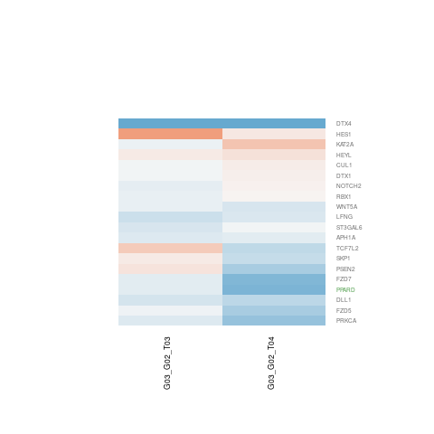
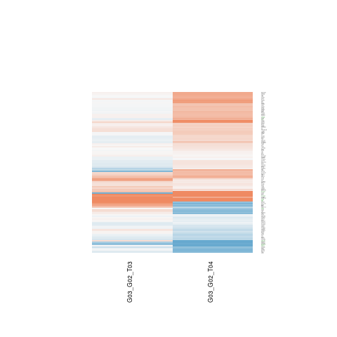
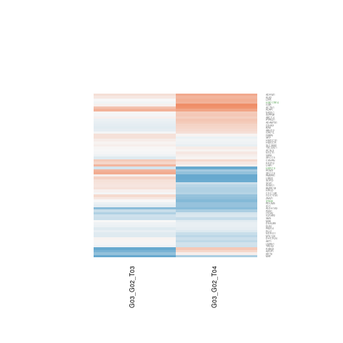
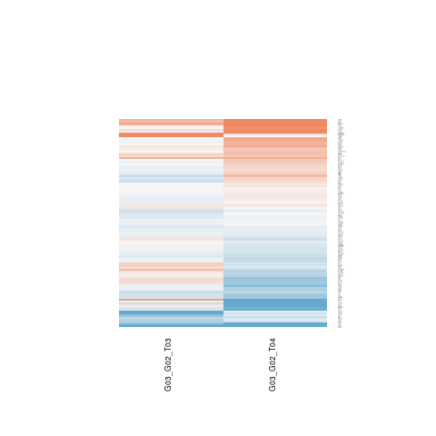
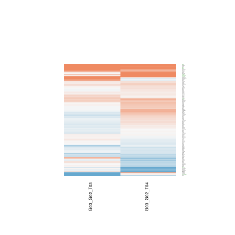
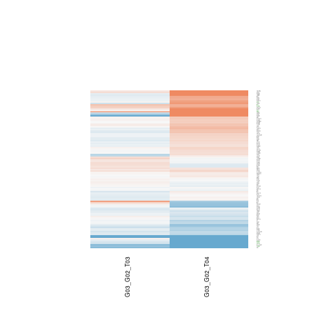
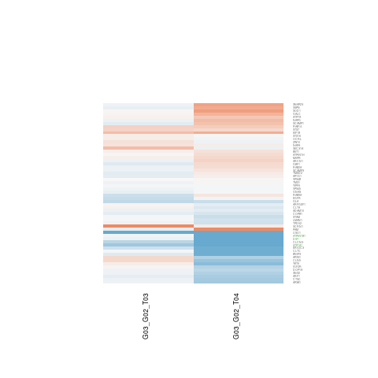
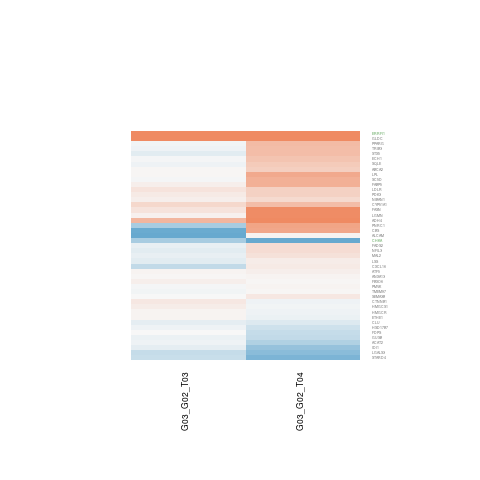
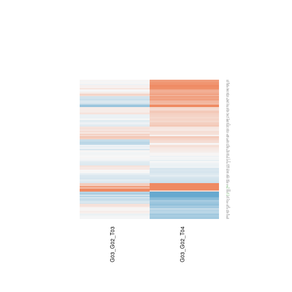
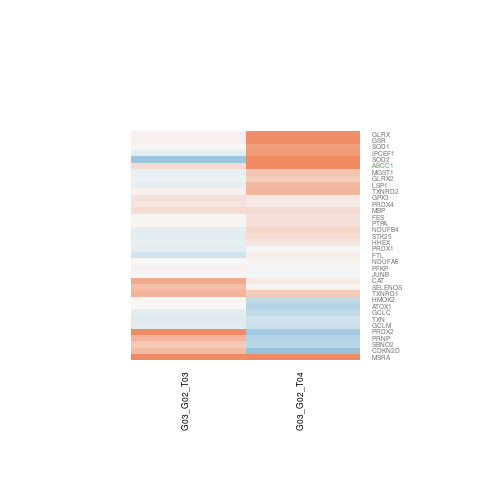

|  M5903 HALLMARK_NOTCH_SIGNALING Large Map Interpret Results |  M5905 HALLMARK_ADIPOGENESIS Large Map Interpret Results |  M5908 HALLMARK_ANDROGEN_RESPONSE Large Map Interpret Results |  M5930 HALLMARK_EPITHELIAL_MESENCHYMA Large Map Interpret Results |  M5947 HALLMARK_IL2_STAT5_SIGNALING Large Map Interpret Results |
|  M5913 HALLMARK_INTERFERON_GAMMA_RESP Large Map Interpret Results |  M5910 HALLMARK_PROTEIN_SECRETION Large Map Interpret Results |  M5892 HALLMARK_CHOLESTEROL_HOMEOSTAS Large Map Interpret Results |  M5902 HALLMARK_APOPTOSIS Large Map Interpret Results |  M5938 HALLMARK_REACTIVE_OXIGEN_SPECI Large Map Interpret Results |